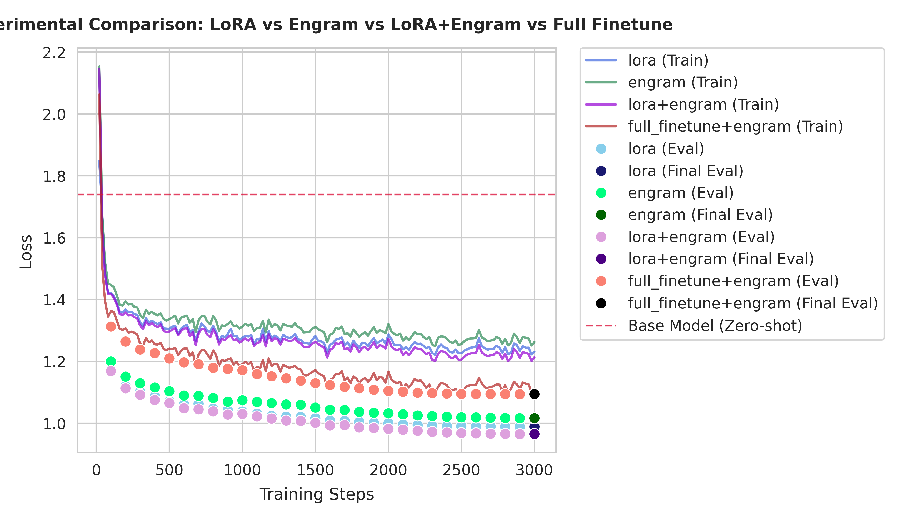

Engram-PEFT
[English] | 中文
[!IMPORTANT] This is an unofficial implementation of the DeepSeek Engram paper (arXiv:2601.07372). DeepSeek-AI official demo is here.


Engram-PEFT is a high-performance, 100% paper-aligned implementation of the DeepSeek Engram architecture. It provides a PEFT-style interface to inject conditional memory into any Transformer-based LLM, while also supporting stacked-adapter and full-finetuning workflows through explicit train_mode controls.
Engram decouples static knowledge storage from dynamic reasoning using a sparse retrieval mechanism, allowing models to scale their factual memory without increasing inference FLOPs or interfering with core logic.
🚀 Quick Start
Installation
pip install engram-peft
To run examples or contribute to development, install the project with development dependencies:
# Using uv (recommended)
uv sync --all-groups
# Using pip
pip install -e ".[dev]"
NPU (Ascend) Support: For training on Huawei Ascend NPU, install torch-npu:
pip install torch-npu --index-url https://repo.huaweicloud.com/repository/pypi/simple
bfloat16 is generally not supported — use engram_dtype="float16" in your EngramConfig.
For distributed training on NPU (torchrun DDP, DeepSpeed ZeRO‑1/2), use the built-in backend detection:
from engram_peft.utils.device import get_distributed_backend
backend = get_distributed_backend() # "hccl" on NPU, "nccl" on CUDA
5-Minute Example
from transformers import AutoModelForCausalLM, AutoTokenizer
from engram_peft import EngramConfig, get_engram_model
# 1. Load base model
base_model = AutoModelForCausalLM.from_pretrained("TinyLlama/TinyLlama-1.1B-intermediate-step-1431k-3T")
tokenizer = AutoTokenizer.from_pretrained("TinyLlama/TinyLlama-1.1B-intermediate-step-1431k-3T")
# 2. Inject Engram layers (aligned with arXiv:2601.07372)
config = EngramConfig(target_layers=[2, 11, 20])
model = get_engram_model(
base_model,
config,
tokenizer,
train_mode="engram_only",
)
# 3. Quick check on trainable parameters
model.print_trainable_parameters()
# trainable params: ... (backbone: 0, engram: ...) || all params: ... || trainable%: ...
YAML-Driven Training (CLI)
You can also trigger training through a YAML configuration file without writing Python scripts:
# 1. Generate a full, documented configuration template
engram-peft config-template --output training_config.yaml
The generated YAML is structured into five main sections:
- model_name_or_path: Base model identifier.
- engram_config: Core hyperparameters for Engram layers.
- lora_config: (Optional) PEFT LoRA settings for hybrid adaptation.
- training_args: Standard transformers.TrainingArguments.
- data_args: Dataset settings and tokenization logic.
2. Launch training using the YAML file (or our minimal examples/config.yaml)
engram-peft train --config training_config.yaml
3. Post-Training Inference
The CLI automatically generates a ready-to-run inference.py script in your output_dir.
uv run python outputs/tinyllama-lora-engram/inference.py
4. Override specific arguments on the fly
engram-peft train --config training_config.yaml --overrides "training_args.learning_rate=5e-5"
📊 Performance Comparison
| Method | Params Added | Speed (s/step) | Training Loss | Eval Loss | Peak Memory (JSON) |
|---|---|---|---|---|---|
| LoRA (r=16) | ~2.25 M | 0.2738 s | 1.231 | 0.9890 | 8.07 GB |
| Engram-PEFT | 545.4 M | 0.2961 s | 1.263 | 1.0165 | 9.38 GB |
| LoRA+Engram | ~547.7 M | 0.3360 s | 1.214 | 0.9656 | 10.33 GB |
| Full Finetune+Engram | ~545.4 M | 0.3818 s | 1.111 | 1.0944 | 15.32 GB |
[!TIP] Performance Insight: In our latest benchmark (Test 8 & 9, TinyLlama-1.1B, 3000 steps), LoRA+Engram achieved the best convergence (lowest eval loss), outperforming standalone LoRA by ~2.3%, Engram by ~5.0%, and Full Finetune+Engram by ~12.2%. Engram-PEFT provides 240x more parameter capacity (545M) for knowledge storage with minimal latency penalty. Use LoRA+Engram to leverage both structural adaptation and high-capacity sparse memory. Full Finetune+Engram, while more memory-intensive, shows competitive performance but requires significantly more GPU resources and exhibits potential overfitting tendencies.
Loss Curve Comparison

* Engram employs sparse lookup; only a tiny fraction of parameters (approx. 1%) are active and receive gradient updates per step. To reproduce these benchmarks on your own hardware, run uv run python examples/compare_engram_lora.py --all. For a detailed breakdown of performance, computation, and memory, see our Performance Analysis.
🛠 Features
- 100% Paper Alignment: Implements Appendix A Table 5 parameters and the official DeepSeek gating/hashing logic.
- CPU Prefetching & Precomputation:
EngramDataCollatorpre-calculates multi-head hash indices on the CPU. By usingnum_workers > 0, these indices are prefetched in parallel with training, ensuring zero hashing overhead on the GPU. - Tokenizer Compression: Built-in NFKC and lowercase normalization for 23% vocabulary reduction.
- Cross-Model Weight Migration: A unique feature (see
weight_transfer.py) that allows migrating Engram weights between different models (e.g., Llama to Qwen) using character-level alignment on a corpus—effectively "recycling" learned knowledge. - Zero-Invasive: Injects via forward hooks; no modification to your base model architecture required.
- Peft-like API: Familiar methods like
print_trainable_parameters()andsave_pretrained(). - Explicit Training Modes:
train_mode="engram_only","preserve_trainable", and"full_finetune"make backbone behavior predictable. - Combined Training (LoRA+Engram): Support for stacking adapters. Injects LoRA for structural fine-tuning and Engram for sparse knowledge retrieval in a single model.
- Layered Optimizer Control: Configure separate optimizers for backbone, Engram dense layers, and Engram sparse embeddings.
- Named Adapters: Industry-standard named adapter management (add/set/unload) for modular knowledge packs.
- Automated Training: Native
EngramTrainerwith built-in sparse Adam support and automatic sync of optimizer hyperparameters. - YAML-Driven CLI: Fully declarative training workflow via YAML configurations with dynamic parameter overrides.
- Automated Inference Generation: Progress-tracking CLI that automatically creates ready-to-run
inference.pyscripts for immediate verification. - Mainstream Model Templates: Out-of-the-box scripts for Qwen 3.5-4B, Ministral-3-3B, and Gemma-4-E2B with quantization support.
- Multimodal & Hybrid Architecture Support: Native support for recursive layer discovery in complex wrappers and synchronization of nested
text_configattributes for state-of-the-art models. - Hugging Face Hub Integration: Support for pushing adapters via
push_to_huband loading directly from Hub IDs viafrom_pretrained, fully aligned with the PEFT ecosystem. - TRL & SFTTrainer Compatibility: Native
EngramCompatibleSFTTrainerthat handles model preparation, hash precomputation, and sparse gradient clipping automatically for seamless instruction tuning. - Quantization Support: Native compatibility with bitsandbytes (4-bit/8-bit) and GPTQ models. Smart dtype detection ensures Engram layers automatically align with the backbone's
compute_dtype. - Unified Device Backend: Automatic detection and support for CUDA, NPU (Ascend), and CPU, with unified AMP, GradScaler, and distributed backend detection (
get_distributed_backend()returns"hccl"on NPU,"nccl"on CUDA). - Distributed Training (DDP & DeepSpeed): Full compatibility with
torchrun(DDP) and DeepSpeed ZeRO-1/2 on both CUDA and NPU. Distributed sparse embeddings are supported under DDP; DeepSetup mode automatically falls back to dense embeddings for ZeRO optimizer compatibility.
📖 Documentation
For full details, see our documentation: - Tutorials: Quickstart and domain knowledge injection. - API Reference: Detailed class and function documentation. - Paper Alignment: How we match the DeepSeek research.
Training Mode Cheat Sheet
# Engram-only PEFT
model = get_engram_model(base_model, config, tokenizer, train_mode="engram_only")
# Keep LoRA / existing trainable params
model = get_engram_model(model, config, tokenizer, train_mode="preserve_trainable")
# Full finetuning + Engram
model = get_engram_model(base_model, config, tokenizer, train_mode="full_finetune")
Layered Optimizer Example
from torch.optim import AdamW
from engram_peft import get_optimizer
optimizer = get_optimizer(
model,
backbone_learning_rate=5e-5,
engram_dense_learning_rate=4e-4,
engram_sparse_learning_rate=2e-3,
backbone_optimizer=AdamW,
)
🎯 Citation
If you use this implementation in your research, please cite the original DeepSeek paper:
@article{deepseek2026engram,
title={Conditional Memory via Scalable Lookup: A New Axis of Sparsity for Large Language Models},
author={DeepSeek-AI},
journal={arXiv preprint arXiv:2601.07372},
year={2026}
}
🤝 Contributing
We welcome contributions! Please see our Contributing Guide for details on our tiered development workflow (L1-L4) and testing standards.
📄 License
Apache License 2.0. See LICENSE for details.